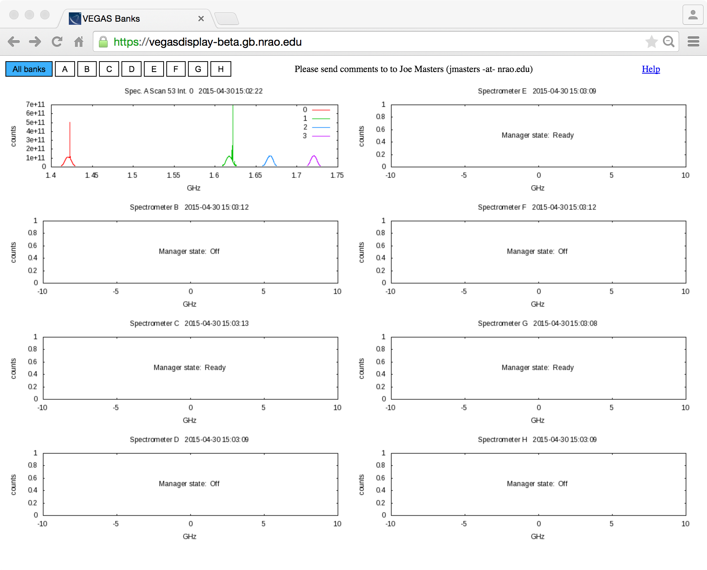
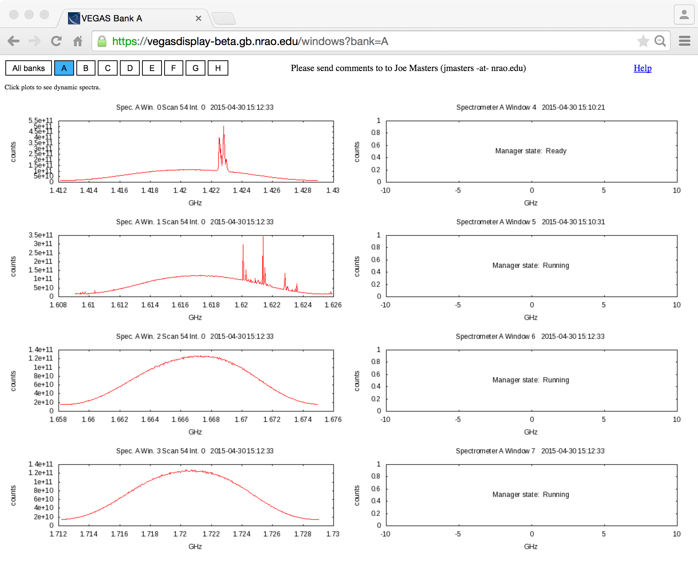
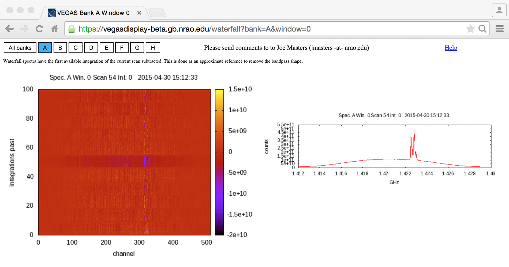

The GBT FITS Monitor (GFM) Astrid spectral line plugin is not well-suited for the data volume and rates from the VEGAS spectrometer. To address this, we developed a web application that reads directly from a data stream produced from the VEGAS monitor and control software.
This guide is meant to help you get started with this simple application.
First of all, the display is currently a "beta" release and only available on the NRAO network. If you are using this from outside NRAO, you will need to launch a browser in a VNC session.
When you load the page at https://vegasdisplay-beta.gb.nrao.edu you will see a screen that looks something like this:

Each of the plots represents the latest spectra sampled from the associated bank. You will see a spectrum plotted for each spectral window, but not for each polarization. You will see the only first polarization recorded for each window. A future release with either combine the polarizations or plot all polarizations.
Note that the data is always averaged to 512 channels. This is done to keep the tool running smoothly and to create images that fit easily within any monitor.
If there is not data to plot, you will see the VEGAS bank manager state in the plot window. The plots will update every 10 seconds.
If you click on either a bank letter at the top of the page or one of the bank plots, you will get a new page (very similar to the last) that displays a plot for each of the windows for that particular VEGAS spectromter.

If you click on one of the these window plots, you will get yet another page that displays a "waterfall" plot of the last 100 sampled spectra. These spectra have the first available integration of the current scan subracted. This is done as an approximate referene to remove the bandpass shape. In addition, the latest single spectrum is displayed to the right of the waterfall.
To move back up a level to the window plots, click the letter of the bank you want. To move up to the highest level where we started, click the "All banks" button.

Please direct any comments or questions to Joe Masters (jmasters -at- nrao.edu) or Mark Whitehead (mwhitehe -at- nrao.edu).